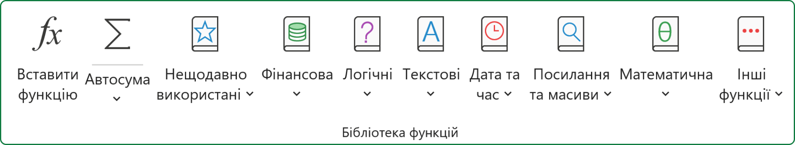
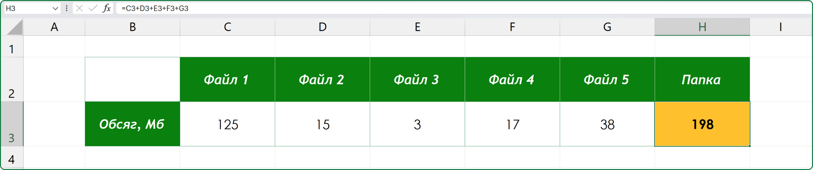
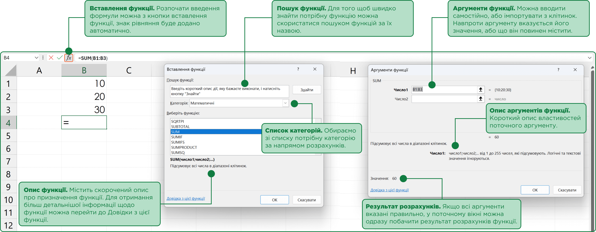
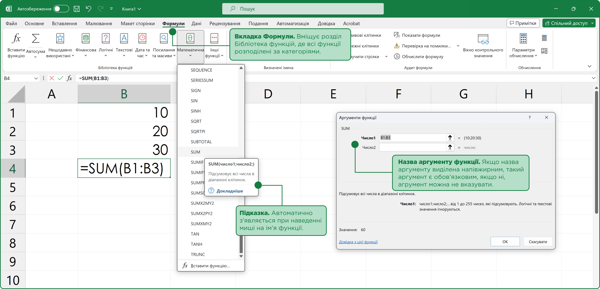
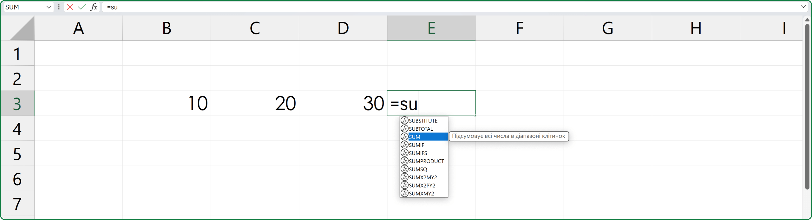

Використання вбудованих функцій в Microsoft Excel
Інколи, для проведення навіть зовсім нескладних розрахунків в електронній таблиці, буває не достатньо лише самих математичних операторів. Наприклад, знайти найбільше значення в діапазоні клітинок, без використання вбудованих в Excel функцій, буде просто не можливо.

Для того щоб краще зрозуміти доцільність використання вбудованих функцій давайте розглянемо наступний приклад: в нас є папка, що містить декілька файлів, потрібно розрахувати загальний обсяг файлів в папці, якщо нам відомий обсяг кожного файлу.

Насправді, розв’язати цю задачу можна за допомоги простої формули =C3+D3+E3+F3+G3. Але, з іншого боку, коли файлів в папці стане значно більше, застосувати подібний підхід ми не зможемо, формула буде дуже громіздкою та незручною для введення. У такому випадку доцільніше скористатися вбудованою в Excel функцією SUM.
Функція – це заздалегідь визначена формула, згідно з якою виконуються обчислення з заданими величинами у вказаному порядку.
Функція в Excel має наступні параметри: ім’я, аргументи, результат.
Під час запису функції у формулі спочатку вказується її ім’я, далі у дужках, через крапку з комою, список аргументів. Аргументами функції можуть бути: числа, текст, посилання на клітинки чи діапазони, вирази або інші функції.
Використання функцій у формулах:
- обрати клітинку для виводу результату;
- натиснути на кнопку Вставлення функції або комбінацію клавіш Shift+F3;
- у вікні Вставлення функції розгорнути спадаючий список Категорія та обрати відповідну категорію;
- серед списку визначити потрібну функцію та натиснути на кнопку ОК;
- у вікні Аргументи функції увести аргументи функції у відповідні поля;
- для виводу результату натиснути кнопку ОК.

Додатково існують ще два способи вставити функцію у формулу.
звернутись до вкладки Формули, де у розділі Бібліотека функцій зібрані усі вбудовані функції за категоріями, розгорнути список визначеної категорії та обрати потрібну функцію, вказуємо аргументи функції та додаєм її у формулу, знак рівняння додається автоматично.

якщо користувач знає назву функції, він після знаку рівняння може одразу почати вводити її ім’я, активується засіб Автозавершення функцій, який виводить усі функції, назви яких починаються з введених користувачем літер. Далі, переходимо до визначеної функції і натискаємо клавішу Tab, або лівою клавішею миші робимо подвійний клік на імені функції. Excel автоматично завершить ім'я функції та відкриє круглу дужку для початку введення аргументів.

Аргументи функції.
Якщо, назва аргументу функції виділена напівжирним, такий аргумент є обов’язковим, і навпаки, якщо назва аргументу не виділена або знаходиться у квадратних дужках, аргумент можна не вказувати.
Прості математичні та статистичні формули.
sum (сумм)
sum(Number1; Number2;) – повертає суму числових аргументів.
(обов’язковий)
(не обов’язковий)
Зауваження:
- функція SUM проігнорує текст і поверне суму лише числових значень.
average (срзнач)
average(Number1; Number2;) – повертає середнє арифметичне значення аргументів, які можуть бути числами, іменами або посиланнями на клітинки з числами.
(обов’язковий)
(не обов’язковий)
Зауваження:
- якщо аргумент є посиланням на клітинку або діапазон клітинок, що містять текст або логічні значення, або є посиланням на вільну позицію, то такі значення ігноруються; проте клітинки, які містять нульові значення, враховуються;
- аргументи, які є значеннями помилок або текстом, що не можуть бути перетворені в числа, викликають помилки.
count (счёт)
count(Value1;Value2;) – повертає кількість клітинок діапазону, у яких містяться числа.
(обов’язковий)
(не обов’язковий)
Зауваження:
- враховуються лише аргументи, які є числами, датами або текстовим поданням чисел;
- аргументи, які є значеннями помилок або текстом, який не можна перетворити в числа пропускаються.
max (макс)
max(Number1;Number2;) – повертає найбільше значення з набору значень.
(обов’язковий)
(не обов’язковий)
Зауваження:
- якщо аргументи не містять чисел, функція МАКС повертає значення 0 (нуль);
- порожні клітинки, логічні значення і текст в масиві або посиланні ігноруються;
- аргументи, які є значеннями помилки або текстами, що не перетворюваними в числа, викликають виникнення помилок.
min (мин)
min(Number1;Number2;) – повертає найменше значення з набору значень.
(обов’язковий)
(не обов’язковий)
Зауваження:
- якщо аргументи не містять чисел, функція МИН повертає значення 0 (нуль);
- порожні клітинки, логічні значення і текст в масиві або посиланні ігноруються;
- аргументи, які є значеннями помилки або текстами, що не перетворюваними в числа, викликають виникнення помилок.